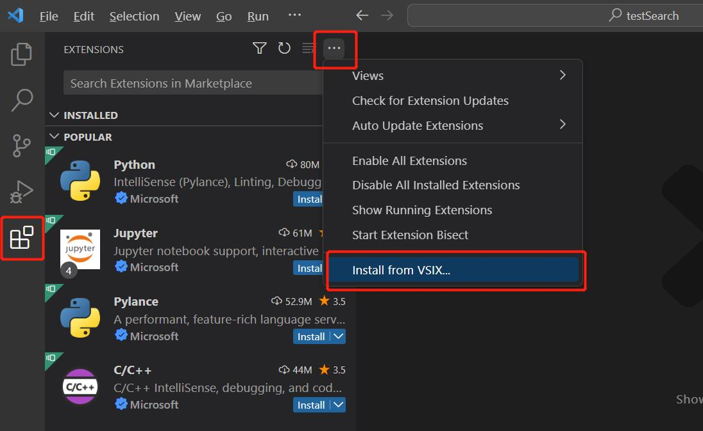
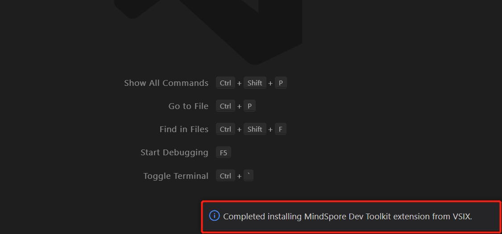
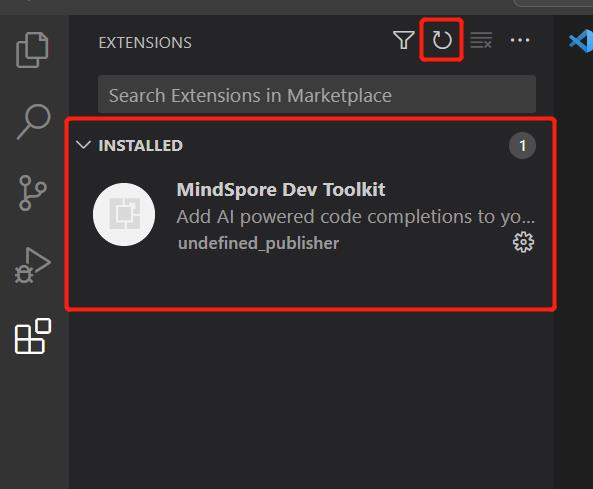

Visual Studio Code 插件安装

安装步骤
获取插件vsix包。
点击左侧第五个按钮“Extensions”，点击右上角三个点，再点击“Install from VSIX…”

从文件夹中选择下载好的vsix文件，插件自动开始安装。右下角提示”Completed installing MindSpore Dev Toolkit extension from VSIX”，则插件安装成功。

点击左边栏的刷新按钮，能看到”INSTALLED“目录中有”MindSpore Dev Toolkit”插件，至此插件安装成功。
